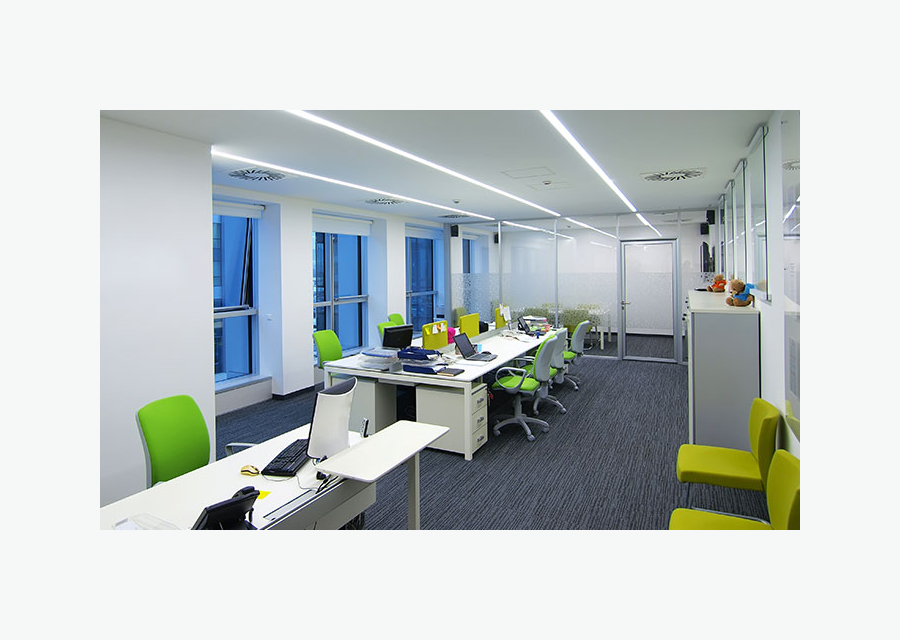
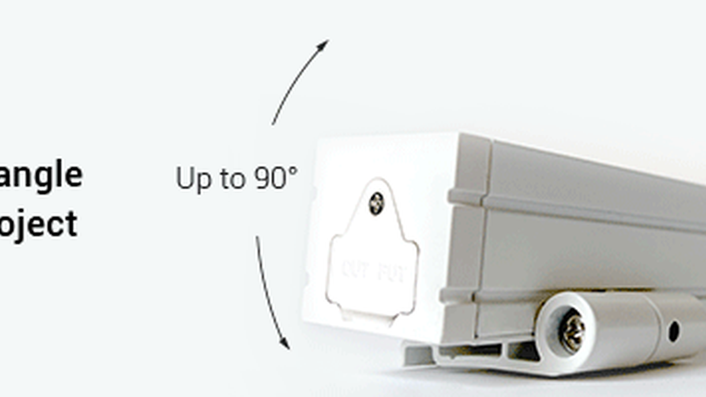

Especificar por instalação
Trilho magnético sobrepor, embutir e ultra slim.
Explorar
Coleção SEO • Prioridade Média
O trilho magnético LED permite criar projetos de iluminação flexíveis, com módulos reposicionáveis e visual arquitetônico. Escolha trilhos de embutir, sobrepor, ultra slim e acessórios compatíveis para lojas, residências, hotéis, escritórios e showrooms.
Mapa técnico
Estrutura adaptada para SEO B2B em português do Brasil, com navegação por produto, aplicação, especificação técnica e acessórios do sistema.
Trilho magnético sobrepor, embutir e ultra slim.
ExplorarPreto, branco e opções minimalistas para arquitetura.
ExplorarSpot, linear, pendente e módulos difusos compatíveis.
ExplorarLoja, sala, hotel, escritório, galeria e showroom.
ExplorarProdutos e filtros
Palavra-chave principal: trilho magnético. Secundárias: trilho magnético sobrepor, trilho magnético embutir, trilhos magnéticos, trilho magnético branco.

Instalação prática para retrofit e ambientes comerciais.

Sistema integrado ao forro para visual arquitetônico.

Luz difusa para circulação, vitrines e ambientes corporativos.

Guia de especificação
O trilho magnético LED é indicado para projetos que precisam de flexibilidade e estética limpa. O sistema permite combinar spots, módulos lineares e pendentes no mesmo trilho, facilitando ajustes de layout em lojas, galerias, residências e ambientes corporativos. Para obra nova, o trilho de embutir entrega acabamento integrado. Para retrofit, o trilho de sobrepor simplifica a instalação. Modelos ultra slim são interessantes quando o projeto busca desenho minimalista. Antes de escolher, verifique tensão do sistema, compatibilidade dos módulos, acabamento, comprimento do trilho e acessórios de conexão.
Aplicações
As páginas de aplicação devem receber links internos desta coleção para capturar tráfego de cauda longa e orientar o comprador por ambiente.
Reposicione módulos conforme layout e exposição.
Planejar aplicaçãoIluminação flexível para salas, circulação e recepção.
Planejar aplicaçãoAmbientes de alto padrão com sistema modular e discreto.
Planejar aplicaçãoFAQ técnico
Respostas curtas ajudam o usuário a decidir e também estruturam conteúdo para rich results quando a plataforma permitir FAQPage schema.
É um sistema de iluminação em trilho no qual os módulos são encaixados magneticamente e podem ser reposicionados.
Sim, há modelos de sobrepor para instalação em teto sem rasgo ou retrofit.
Embutir fica integrado ao forro; sobrepor é instalado na superfície.
Sim, se os módulos forem compatíveis com o mesmo sistema de trilho.
Cotação B2B
Envie comprimento, tensão, temperatura de cor, ambiente de uso e prazo. Nossa equipe ajuda a combinar produto, fonte, perfil, conector e controle corretos.